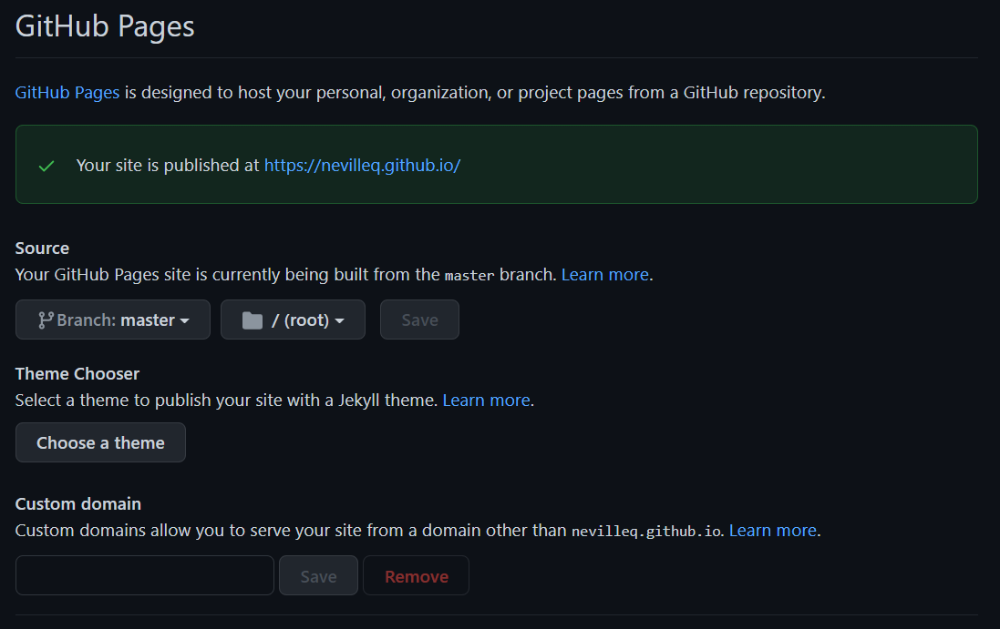

name: "Yay internet!"
header-includes:
\usepackage{graphicx}
\usepackage{float}
output_dir: "."
navbar:
title: "Home"
right:
- text: "About"
href: about.html
- icon: fa-envelope fa-lg
href: mailto:<nevil066@umn.edu>
- icon: fa-github fa-lg
href: http://github.com/nevilleq/
output:
html_document:
theme: flatlyWeek 9: Websites w/R & Github
Basics, Flexdashboard, and Intro to Final Project
I. Introduction
\(~\) \(~\)
Where we’ve been –
The midterm assessment was designed to evaluate your ‘fundamental’ skills as a data scientist, corresponding to Course Objectives (1)-(4,5) in the syllabus. Those skills break down into –
- Workflow
- .Rprojects + Github, Rmarkdown, best
Rpractices, reproducibility
- .Rprojects + Github, Rmarkdown, best
- Data Wrangling
dplyr,tidyr,forcats,stringr,lubridate- plus iteration with
purrr::mapfamily
- Data Visualization
ggplot2,gt
- Exploratory Data Analysis
- Use the above to read, explore, clean/tidy, prepare for analysis and visualize new data
\(~\) \(~\)
Where we’re going –
As we move forward this semester (today and after Spring Break 3/5 - 3/13), we will continuously utilize and extend these ‘fundamental’ skills to maximize R and Rstudio’s potential for data science and analysis. With the aforementioned fundamentals in hand, we are going to learn how to use these ‘advanced’ communication and analysis tools –
- Enhanced Visualization
- Interactivity w/
ggplotly,reactable - Enhance
gtwithgtExtras(andflextable,ftExtra) - Intro to
flexdashboard
- Interactivity w/
- Websites in R + Github (today)
- Basics, personal webpage
- Websites as analytical display tools
- Embedding
flexdashboard
- Embedding
- Spatial Visualization
- ‘Tidy Maps’ w/
sforsp+tidyverse+ggmapsandggplot2 - Introduction to interactive maps with
ggplotlyand/orleaflet
- ‘Tidy Maps’ w/
- Shiny Apps
- Basics
- Publish in an
Rhosted website- Embedding interactive
flexdashboards - Embedding
shinyapps
- Embedding interactive
- Miscellaneous
- *Working with big data in R
dt_plyr,collapse,h2o,sparklyr - *Working with databases in R
db_plyr - *How to develop a package with Rstudio & Github
- *Webscraping with R
- *Working with big data in R
\(~\) \(~\)
So what exactly are we going to do today?
Today we’re going to learn how to create and host a website with R and Github Pages, as well as how to embed a flexdashboard inside of a webpage. We will focus on setting y’all up to create your own personal website (homework) but with aim at extension to websites as analytical/data communication tools.
II. Website Tutorial
At it’s core, hosting a website in R with Github boils down to 3 main components –
- .Rproject \(\longleftrightarrow\) Github connection (Github Pages)
- .yaml which controls the knitting/rendering/building of the website (just like normal)
- .RMD files knitted to .html pages (like any other website)
Step 1. Initialize Github Repository
- For today, we’re going to initialize an example website repo entitled
example.github.io - The ending
.github.iolet’s Github know automatically that it’s a website - Not necessary, but makes life easier
- Website names are case sensitive so keep everything lower case
- Connect a local .Rproject/directory to this repo like normal
Step 2. Basics
The two most important and necessary features of a website, at least in R, are the .yaml (directions) and index.RMD (home page). Again, case sensitive so make sure everything is lower case and that the yaml file is called _site.yaml (the _ prevents name masking).
Now, download the website_template.zip from the Week 9 Lecture materials on Canvas. In the _site.yaml file, you’ll see the following instructions which control the website –
The name: is somewhat irrelevant, and the header-includes: statement is just calling some LaTex packages which allow pictures to “float” if you’re familiar (not super important).
However, what IS important is the
output_dir = "."(.Rproject root directory)navbar:starts the navigation bar at the top of the website
title:defines the name of the “Home Button”right:simply means put what follows on the right of the navbartext:again is the name of the buttonhref:is the “web reference”, i.e. an .html file or linkicon:defines a button with a picture (mail for email, etc.)- A full list of these icons from ‘Font Awesome’ can be found here (hint: LinkedIn)
output:like normal, want.html
theme:comes from these Bootswatch .CSS files- These themes are all found in the
/site_libsfolder - These and more can be downloaded from Bootswatch here
- These themes are all found in the
Important Things to Remember
1. yaml Scoping Matters
‘Scoping’ here refers to the horizontal alignment of each line in the yaml. You’ll notice that everything in the yaml has a “nested” structure, in that every sub-option, sub-button, sub-directory, etc. is 1 tab to the right. When introducing more nested drop down buttons (which we will do later, and you will do on the hw).
2. You must have a _site.yaml and index.RMD/index.html
3. You can href any knitted .html of any kind (including dashboards!)
Step 3. Initialize your website/repo
Next, there are 2 options to ‘Build’ the website
- Type this into the console to ‘Build’ your website
rmarkdown::render_site(encoding = "UTF-8")- Close and re-open the project, go to tab (top right by default) which normally has ‘Environment’, ‘Git’, etc. and you should now see a ‘Build’ tab. Click on it, you should see a button that says ‘Build’ with a hammer next to it in the upper left of that window/pane. Click on it and that’s it! (it will run the line of code above in the console)
Add, commit, pull, push
Finally go back to your repository on Github
- Refresh and navigate to the repository ‘Settings’ (right hand side)
- Scroll down to ‘GitHub Pages’ and click on the link
- Set the GitHub pages source to the main branch

- Refresh the webpage and you should see a green check mark above indicating ‘Your site is published at
’ - Click on that link, that’s your website!
Useful tips and tricks
Including links is as easy as [link name](url) and pictures can be included with  (though it can be easier to use .html, there are two examples in the template).
Remember to change the ‘Build’ settings to ‘Re-knit’ when file dependencies change to ensure your websites links, buttons, menus, etc. all ‘knit’ and ‘work’ together. You will need to do this everytime you change any files.
If you want to add a drop down menu, all you have to add to the yaml is this
name: "Yay internet!"
header-includes:
\usepackage{graphicx}
\usepackage{float}
output_dir: "."
navbar:
title: "Home"
right:
- text: "New Button"
menu:
- text: "New Drop Down Button"
href: whatever.html
- text: "About"
href: about.html
- icon: fa-envelope fa-lg
href: mailto:<nevil066@umn.edu>
- icon: fa-github fa-lg
href: http://github.com/nevilleq/
output:
html_document:
theme: flatlyYou need to push your changes to Github before you will see them change on the web.
You may need to refresh the cache/cookies or delete all browsing history from the last hour in order to see changes immediately on the web.
Additional Resources
If you’d like to mess around with other Bootswatch themes here’s an RCommunity Thread for adding different Bootswatch themes.
If you’d like to know more about websites with R, here’s a great chapter from Rmarkdown: The Definitive Guide.
If you need a little extra help or if you’d like to peruse a different tutorial, here is another great one.
III. Activity
Activity 1. Embed your dashboard from last lecture’s activity into your example website
In order to embed a flexdashboard into a website, the website’s _site.yaml and the dashboard’s yaml conflict; and the site’s instructions supersede the dashboards. In order to get around this, you can simply render with this command
rmarkdown::render("dashboard_template.RMD", output_format = "flexdashboard::flex_dashboard")After rendering, rebuild the website and you should be good to go!
IV. Final Project
Refer to the syllabus for more specific details about the entire project.
Today, we have covered the underlying fundamentals of building a website with dashboards to communicate analytical results – meaning we are ready to get started on our final projects.